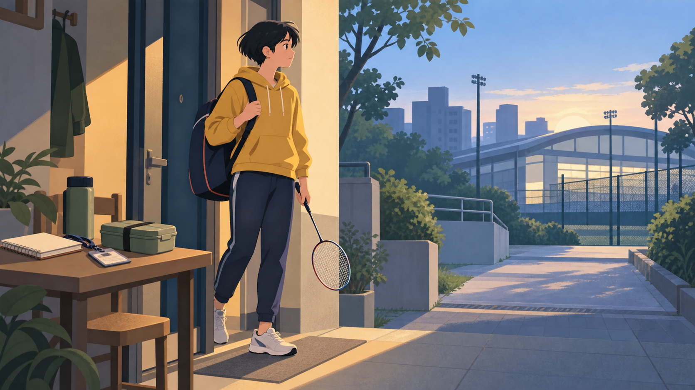
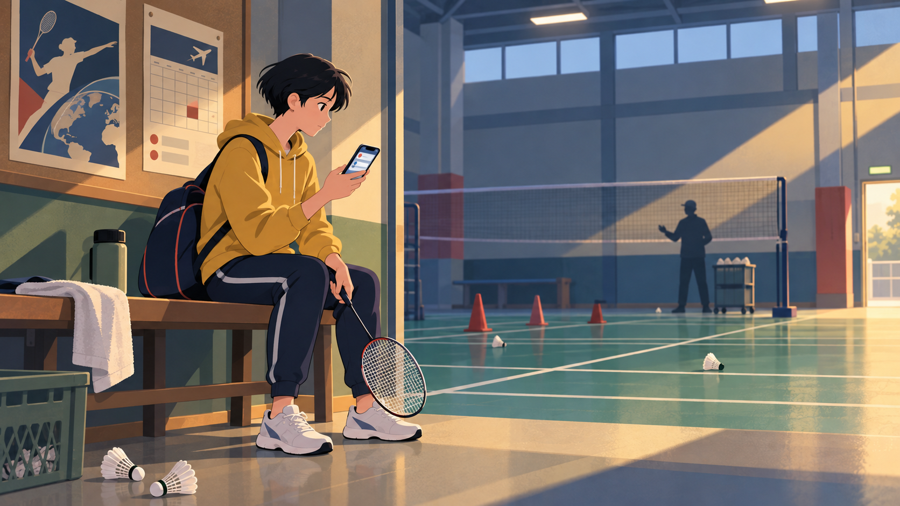
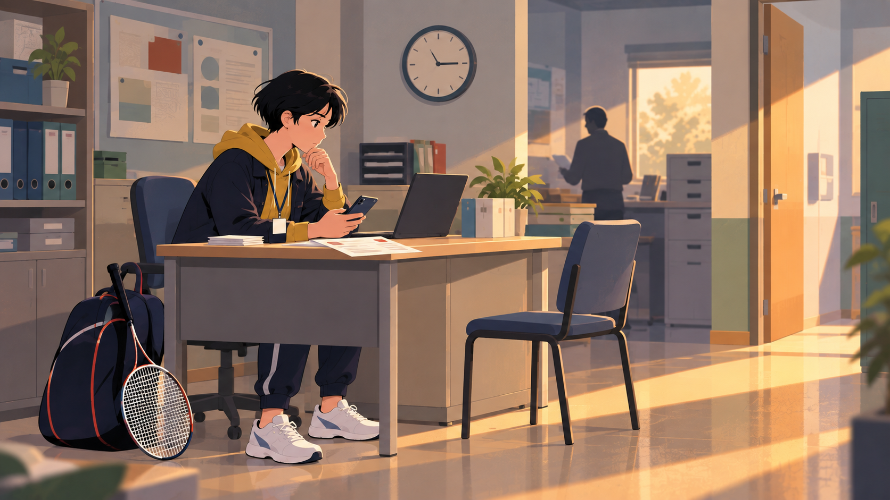
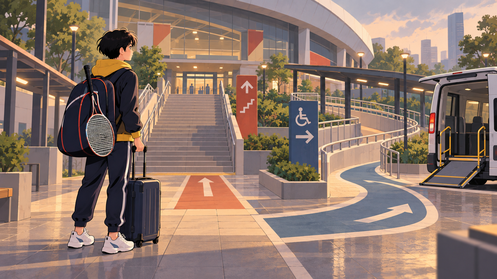
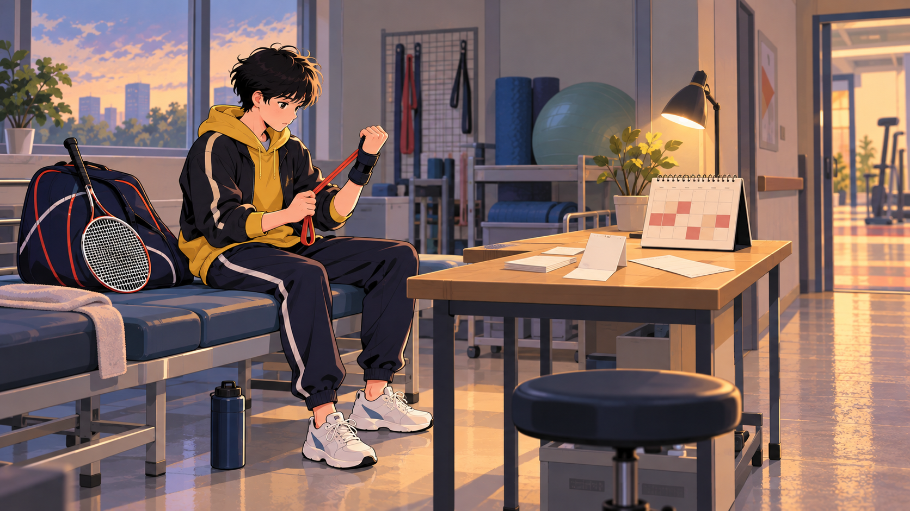
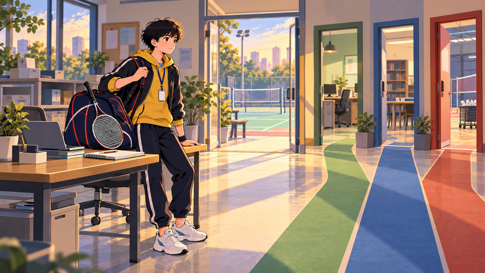

01 / 06
走出家門之前
訓練、課業與工作，從早晨就開始分配。

02 / 06
比賽通知來了
比賽增加，也意味著積分、旅費與參賽成本。

03 / 06
請假不是沒有代價
一邊工作、一邊訓練，常要處理職務代理與時間衝突。

04 / 06
先抵達，才有比賽
交通、場地與無障礙條件，可能在比賽前就先成為門檻。

05 / 06
意外成本
受傷可能中斷訓練、錯過積分賽，也重新定義下一步。

06 / 06
不只一條路
運動、工作、學業與家庭，可以成為需要協調的多重身分。